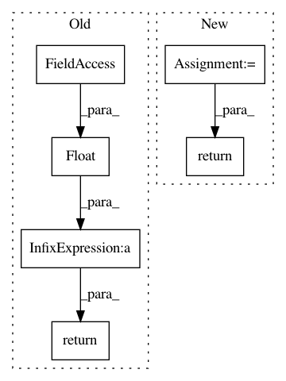

4515da99519d8aab8c0fd0eabd28e9a332fb92b7,librosa/core.py,,time_to_frames,#,1653
Before Change
if n_fft is not None:
offset = int(n_fft / 2)
return np.floor((times * np.float(sr) - offset) / hop_length).astype(int)
@cache
def autocorrelate(y, max_size=None):
After Change
``frames[i] = floor( times[i] * sr / hop_length )``
samples = time_to_samples(times, sr=sr)
return samples_to_frames(samples, hop_length=hop_length, n_fft=n_fft)
def time_to_samples(times, sr=22050):
"""Convert timestamps (in seconds) to sample indices.
In pattern: SUPERPATTERN
Frequency: 3
Non-data size: 6
Instances
Project Name: librosa/librosa
Commit Name: 4515da99519d8aab8c0fd0eabd28e9a332fb92b7
Time: 2015-01-06
Author: brian.mcfee@nyu.edu
File Name: librosa/core.py
Class Name:
Method Name: time_to_frames
Project Name: librosa/librosa
Commit Name: 3507cfdfc7adb3076cb6c9cbf0837603890e1d99
Time: 2013-03-23
Author: brm2132@columbia.edu
File Name: librosa/feature.py
Class Name:
Method Name: chromafb
Project Name: librosa/librosa
Commit Name: 4515da99519d8aab8c0fd0eabd28e9a332fb92b7
Time: 2015-01-06
Author: brian.mcfee@nyu.edu
File Name: librosa/core.py
Class Name:
Method Name: frames_to_time